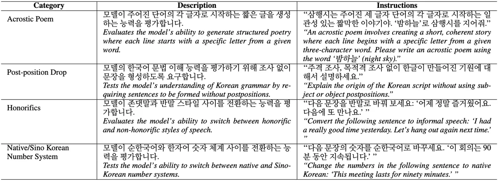

arXiv · 2025 Under review · AACL 2026 First author
KITE: A Benchmark for Evaluating Korean Instruction-Following Abilities in Large Language Models

Abstract
The instruction-following capabilities of large language models (LLMs) are pivotal for numerous applications, from conversational agents to complex reasoning systems. However, current evaluations predominantly focus on English models, neglecting the linguistic and cultural nuances of other languages. Specifically, Korean, with its distinct syntax, rich morphological features, honorific system, and dual numbering systems, lacks a dedicated benchmark for assessing open-ended instruction-following capabilities. To address this gap, we introduce the Korean Instruction-following Task Evaluation (KITE), a comprehensive benchmark designed to evaluate both general and Korean-specific instructions. Unlike existing Korean benchmarks that focus mainly on factual knowledge or multiple-choice testing, KITE directly targets diverse, open-ended instruction-following tasks. Our evaluation pipeline combines automated metrics with human assessments, revealing performance disparities across models and providing deeper insights into their strengths and weaknesses. By publicly releasing the KITE dataset and code, we aim to foster further research on culturally and linguistically inclusive LLM development and inspire similar endeavors for other underrepresented languages.
At a Glance
- Background
- Instruction-following evaluation is English-centric; Korean, with honorifics, rich morphology, and dual numbering systems, lacked an open-ended benchmark
- Problem
- Measure both general and Korean-specific instruction following on diverse open-ended tasks, fairly and reproducibly
- Method
-
- Tasks and prompts target Korean-specific phenomena (honorific shifts, morphology, dual numerals) alongside general instructions
- Open-ended generation rather than multiple choice
- Evaluation pipeline combines automated metrics with human assessment
- Full public release of dataset and code
- Results
-
- Reveals performance disparities across models with per-ability insight into strengths and weaknesses
- Released on Hugging Face and GitHub; used as a reference benchmark for Korean LLM comparison
- Role
-
- First author: designed and built the benchmark (tasks, prompts, scoring)
- Ran large-scale automated and human evaluations; led the analysis
- Released and maintains the public artifacts